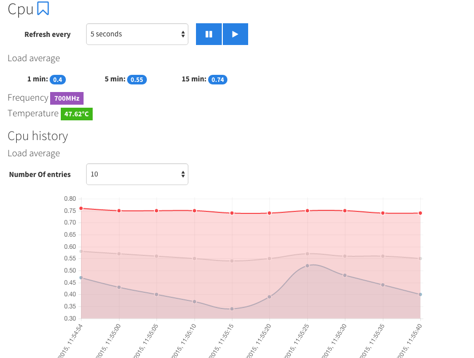
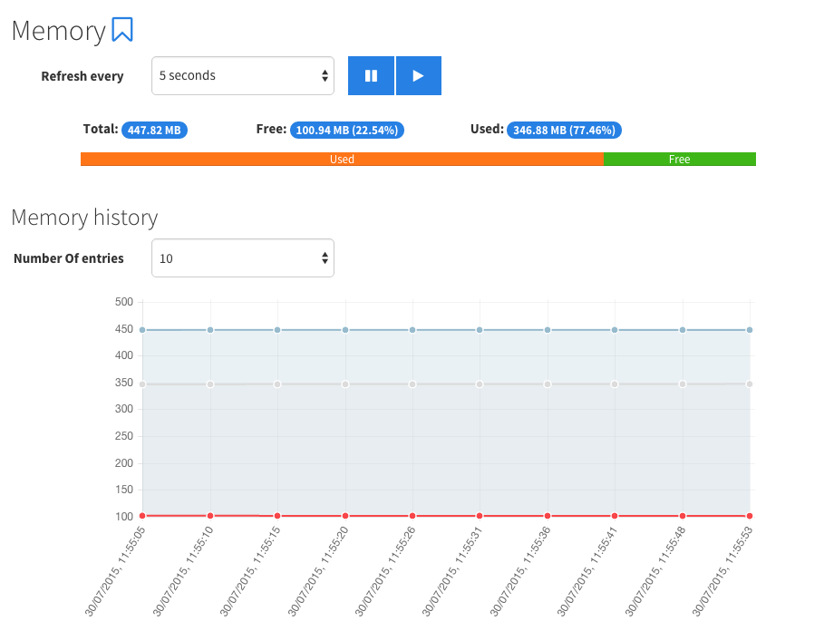

A simple websocket and angular based application to monitor my raspberry pi
A simple websocket and angular based application to monitor a raspberry pi (2).
The following components are monitored:
The average load, frequency and temperature are monitored. The average load and temperature are also plotted on a graph. 
The total, free and used temperature are monitored and they are also plotted. 
Please make sure node and npm are installed. Also install bower globally. Install by running
npm install
and
bower install
Installation done :)
Configure the application in the config.json file. For the moment the only configuration is the port used (standard 7076).
Run the application by executing
sudo node triberraar-pi-monitor.js
!!! Be sure to run as sudo as some functionality needs this !!!
The back-end is written in javascript using Node.js. It uses some supporting javascript libraries:
The back-end provides both a JSON Rest-api and websocket communication. If an error occurs the rest api responds with 500 and looks like:
{
"message": "The error message",
"error": <the original error object>
}If an error occurs during the websocket communication a response will look like this:
{
"error": {
"message": "The error message",
"error": <the original error object>
}
}Temperatures are reported in degrees celcius. Sizes are reported in kilobytes. Frequency is reported in megahertz. Uptime is reported in seconds.
The front-end is also written in javascript using AngularJS. It uses some supporting javascript libraries:
Layout is done with Bootstrap and Font Awesome. The used theme is Cosmo.
The front-end provides a page per monitored component and history for some. There is also a configurable dashboard, that is saved into local storage.
The cpu frequency is gathered by reading the '/sys/devices/system/cpu/cpu0/cpufreq/cpuinfo_cur_freq' file.
The load average is gathered by reading the '/proc/loadavg' file.
The temperature is gathered by reading the '/sys/devices/virtual/thermal/thermal_zone0/temp' file.
The cpu information can be queried on '/cpu' and looks like:
{
"loadAvg":{
"1min":0.4,
"5min":0.47,
"15min":0.45
},
"frequency":950,
"temperature":48.15
}The cpu information can be queried by sending the 'cpu' message and looks like:
{
"content": {
"loadAvg":{
"1min":0.4,
"5min":0.47,
"15min":0.45
},
"frequency":950,
"temperature":48.15
}
}The memory information is gathered by reading the '/proc/meminfo' file.
The memory information can be queried on '/memory' and looks like:
{
"total":447824,
"free":51744,
"used":396080
}The memory information can be queried by sending the 'memory' message and looks like:
{
"content": {
"total":447824,
"free":51744,
"used":396080
}
}The network information is gathered by reading the '/sys/class/net/eth0/statistics/rx_bytes' and '/sys/class/net/eth0/statistics/tx_bytes' files.
The network information can be queried on '/network' and looks like:
{
"rx":518892,
"tx":518891.808
}The network information can be queried by sending the 'network' message and looks like:
{
"content": {
"rx":518892,
"tx":518891.808
}
}The storage information is gathered by executing the 'df' command.
The storage information can be queried on '/storage' and looks like:
{
"total":29630532,
"used":4710528,
"free":23391788,
"reserved":1528216
}The storage information can be queried by sending the 'storage' message and looks like:
{
"content": {
"total":29630532,
"used":4710528,
"free":23391788,
"reserved":1528216
}
}The time information is gathered by reading the '/proc/uptime' file.
The time information can be queried on '/time' and looks like:
{
"uptime":9524454970,
"current":"2015-07-29T20:54:57.989Z"
}The time informationis emitted to all connected sockets every second and looks like:
{
"content": {
"uptime":9524454970,
"current":"2015-07-29T20:54:57.989Z"
}
}